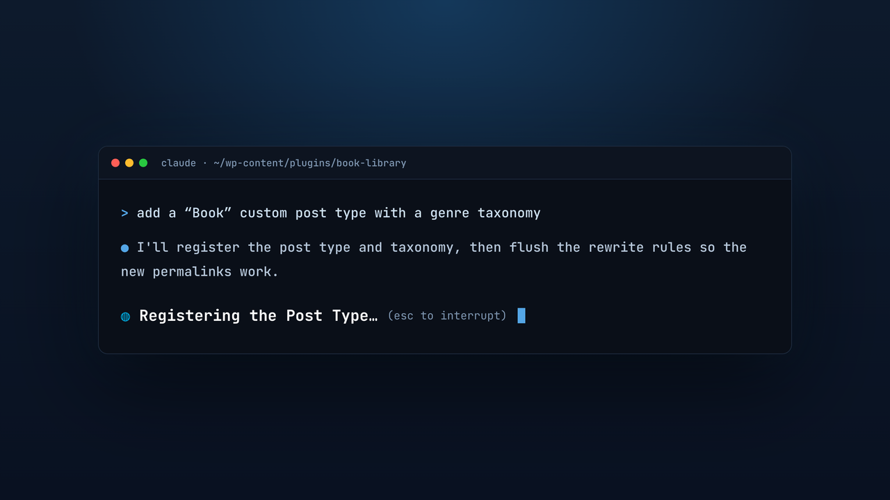

Claude Code's "thinking" spinner, rewritten in WordPress core. Real WP functions, WP-CLI commands, and hooks, bent into gerunds.
meet Cyborg Wapuu: your spinner, running on WordPress core.
No binary patching, no wrappers. Just a supported key in your Claude Code settings.
It is just spinnerVerbs in ~/.claude/settings.json. Append to the defaults, or replace them.
It lives in your home-directory config, not the app, so a Claude Code update will not wipe it.
The WordPress gerunds are Claude Code's terminal "thinking" spinner. Run claude in a real terminal to see them.
// ~/.claude/settings.json { "spinnerVerbs": { "mode": "append", "verbs": ["Enqueuing the Scripts", "Running Search-Replace", ...] } }
macOS & Linux get a one-liner. Windows and everyone else can edit the file directly.
git clone https://github.com/russelleNVy/wordpress-claude.git cd wordpress-claude ./install.sh # append to the defaults ./install.sh --replace # WordPress verbs only
Paste into Claude Code: "Add the verbs from verbs.json to my ~/.claude/settings.json under spinnerVerbs with mode: append."
Copy the array from verbs.json into ~/.claude/settings.json (macOS/Linux) or %USERPROFILE%\.claude\settings.json (Windows).
spinnerVerbs.
Pulled from WordPress core, WP-CLI, and the ecosystem. A growing list. See the full verbs.json →
New to running Claude Code / AI on WordPress projects? A few things that pair well with this pack.
Claude Code can execute wp commands directly, so it can scaffold plugins, run search-replace, export the DB, and flush caches for you, then read the output and keep going.
Set up PHPCS with WordPress-Coding-Standards and ask Claude to run it and fix violations. It knows the sniffs.
Nonces, capability checks, sanitize_*, esc_*, and $wpdb->prepare are exactly the review an AI is good at. Ask before you ship.
Drop a CLAUDE.md in your plugin or theme with your conventions (hooks, folder layout, standards) so every session starts aligned.
Run wp scaffold plugin for the boilerplate, then let Claude build the features on top of a standards-compliant base.
Pair with wp-env or a local stack and have Claude write PHPUnit / integration tests against your hooks and REST routes.